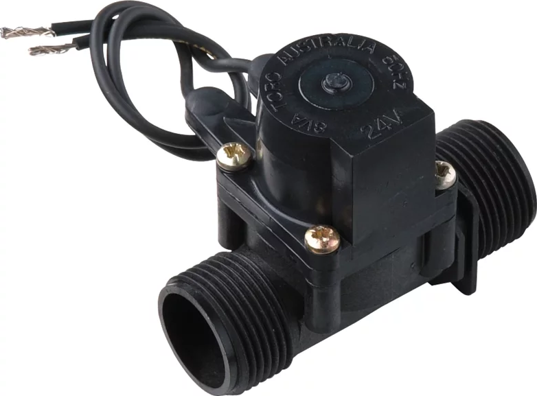

Kicad for software developers
with David Tulloh
Please install Kicad ≥5.0
What
- Tutorial
- Introduction to Schematic drawing
- Introduction to PCB layout
- Not covering electronics design
Sprinkler System
Sprinkler System
Timeline
- Intro - 10 mins
- Schematics - 30 mins
- Schematic wrap - 5 mins
- PCB Intro - 10 mins
- PCB - 30 mins
- PCB wrap - 5 mins
Who
- Electronics designer
- Software developer
Schematic
- Describes how device works
- Abstract
- Source code, not binary
Schematic demo
Schematic wrap
- Annotate
- DRC
- Footprints
PCB Intro
- Schematic to PCB
- Compilation process
- Building a physical product
PCB Core
1. Drilling
2. Plate holes
3. Etch
4. Solder mask
5. Plate

6. Silkscreen
PCB Layout Task
- Position component footprints
- Define traces and vias
- Position and add silkscreen